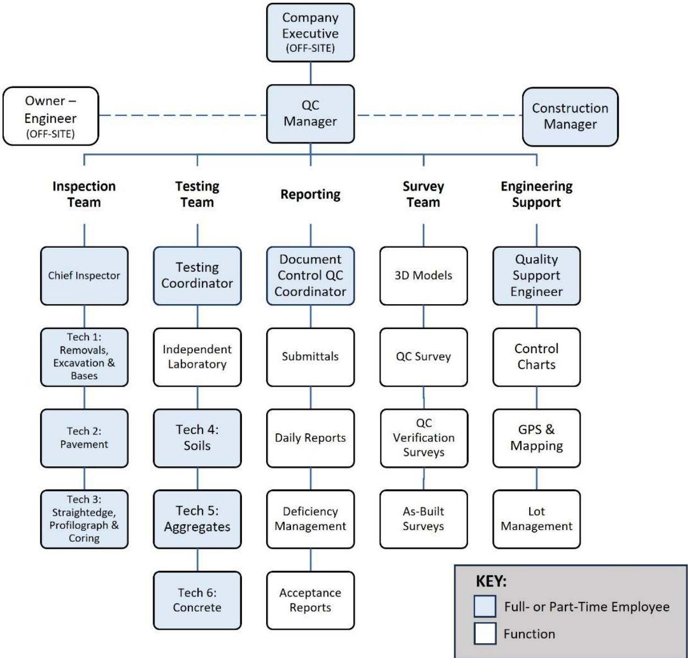
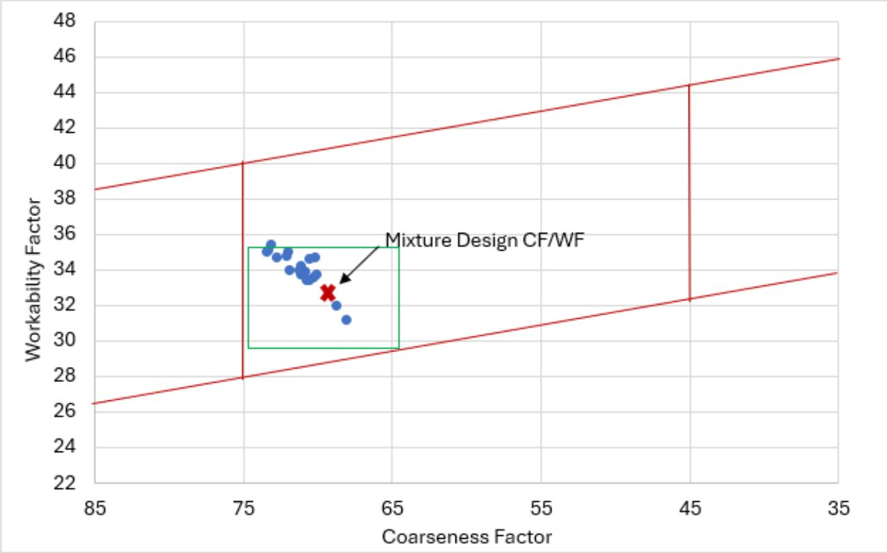

Quality Control and Quality Assurance Integration
Quality Control–Quality Assurance integration is a comprehensive system that evaluates and controls every material, process, workmanship, and performance characteristic of concrete paving—from raw‑material inspection through mixing, placement, and the finished pavement—by continuously monitoring critical mix parameters such as water‑to‑cementitious ratio, air‑void content, and cracking risk [1][2][4][5]. It relies on systematic sampling, testing, calibrated equipment, qualified personnel, and predefined action and suspension limits so that when values approach out‑of‑control conditions the process is adjusted or halted, keeping concrete properties within defined tolerances [1][2][4][5]. The integrated approach is mandatory for all concrete pavement projects, linking design, material selection, testing, and construction activities into a single documented plan that provides real‑time data for corrective action and supports long‑term performance assurance [1][2][4][5].
Sources (5)
Purpose and quality objectives
The integrated QC‑QA system evaluates and controls concrete paving by covering every material, process, workmanship, and performance characteristic from raw‑material inspection through mixing, placement, and the finished pavement. It monitors critical mix parameters—such as water‑to‑cementitious ratio, air‑void content, and cracking risk—and checks constituent materials (aggregates, cement, admixtures) for defects like segregation. Production and placement activities are kept within specification by continuous oversight: “QC includes sampling, testing, inspection, and corrective action (where required) to maintain continuous control of a production or placement process”; “continuous monitoring, sampling, testing, inspection, and corrective actions on production and placement activities so that concrete properties stay within defined tolerances”. Contractors use this data to understand and manage their processes: “QC includes sampling and testing by contractors so they can understand and control their processes, reduce variability, and improve the quality of their work.” When measured values approach out‑of‑control conditions, predefined thresholds trigger response: “Provide action limits (not specification limits) that dictate when the process should be adjusted.” [1][2][4][5]
The following figure illustrates how these integrated contractor QC and process control activities align with QA and acceptance procedures.
 Integration of contractor QC and process control activities with QA and acceptance. [2]
Integration of contractor QC and process control activities with QA and acceptance. [2]
The figure illustrates a workflow where the Pave stage feeds into Testing & Inspection, which then branches to either Success Evaluation or Deficient rework based on quality parameters. An Analytics Dashboard provides data-driven process control and corrective actions by receiving reports from the inspection phase. QC includes sampling, testing, inspection, and corrective action (when required) to maintain continuous control of a production or placement process.
[1] — Ch. 9 (p. 263), Ch. 10 (p. 326); [2] — Ch. 1 (pp. 34–41), Ch. 2 (p. 67), Ch. 4 (pp. 141–146), Ch. 7 (pp. 336–348), Ch. 8 (pp. 360–361), App. A (p. 365), App. B (pp. 405–406); [4] — Ch. 1 (pp. 13–18), Ch. 2 (pp. 22–26), Ch. 4 (pp. 42–65), App. D (p. 129); [5] — 1. Quality Assurance Concepts (pp. 10–15)
The integrated QC/QA approach is designed to satisfy the fundamental requirement that concrete pavement be built in a controlled, repeatable manner that fully conforms to design specifications and performance criteria. Fragmented responsibilities have historically caused mis‑aligned actions; as one guide notes, “contractors sometimes try to overcome constructability issues associated with a poor concrete mixture by overusing their equipment rather than seeking to correct the mixture.” Because “inspection alone cannot be counted upon to ensure specifications are met,” the system mandates systematic sampling, testing and real‑time monitoring of critical parameters – “monitor and adjust for critical parameters, such as the water/cementitious materials (w/cm) ratio, air‑void system, and risk of cracking,” – so that deviations are caught early. The QC function is required to “QC must monitor production consistency and produce materials/pavement within required tolerances”; when data show drift, “When process parameters drift toward an out‑of‑control condition, the integrated system provides clear authority to adjust or halt production.” This prevents undetected defects, reduces internal and external failure costs, and avoids the costly consequences of non‑conforming work. A comprehensive QC plan therefore “must prescribe explicit action and suspension limits … triggers immediate corrective measures or production stoppage, preventing non‑conforming work…,” while pre‑production checklists, key inspections and documented corrective actions ensure that all critical materials and workmanship are “measured, inspected, and kept ‘in control’ throughout production.” By linking design, material selection, testing and construction activities, the integration fulfills the overarching requirement that “every aspect of concrete production—mix design parameters, material condition, and personnel actions—must be continuously monitored and controlled so that any deviation from contract specifications is identified early and corrected before a defect occurs,” ultimately delivering safe, durable pavements. [1][2][4][5]
[1] — Ch. 1 (pp. 21–22), Ch. 9 (p. 263), Ch. 10 (p. 326); [2] — Ch. 1 (pp. 26–41), Ch. 2 (pp. 53–67), Ch. 4 (pp. 141–158), Ch. 7 (pp. 336–348), Ch. 8 (pp. 360–361), App. A (p. 365), App. B (pp. 397–406); [4] — Ch. 1 (pp. 13–18), Ch. 2 (pp. 22–26), Ch. 4 (pp. 42–65), Ch. 7 (p. 106), App. D (p. 129); [5] — 1. Quality Assurance Concepts (pp. 8–15), 3. Quality Assurance for Concr… (p. 38)
Scope and applicability
“Quality control‑quality assurance (QC/QA) integration is applicable to all concrete pavement projects in transportation construction.” The guides further state that it “covers the constituent materials such as cementitious binders, aggregates, water, and admixtures” and expands this scope to “all concrete mix constituents—cement, aggregates, admixtures—as well as geotechnical fill, sub‑base, base and slab components, and every approved construction material—aggregates, cement, admixtures, and the concrete mix.” The procedure also embraces any supplementary products that become part of the mix.
The integrated approach must be used for every construction activity. It “applies to all of the constituent materials…as well as every step of the construction process from mixture design and pre‑qualification through field verification, batching, placement behind the paver and finishing.” The scope includes “the full sequence of acquisition, mixing, transport, placement, finishing, curing, post‑placement inspection, and the testing of molded specimens for strength compliance,” together with base‑course installation, surface inspection for voids or grout fills, calibration of batch‑plant metering devices, and joint work. “The procedure must be employed wherever a contractor prepares a project‑specific QC plan (or where the prime contractor oversees construction), ensuring that action limits, suspension limits, and corrective actions are defined for the entire concrete paving scope.”
This requirement is mandatory under “all project conditions such as FAA versus DoD ownership, schedule constraints, material availability, or site‑specific factors,” meaning it applies wherever a concrete pavement is constructed, regardless of ownership, schedule pressure, material supply issues, or local site characteristics. [1][2][4][5]
[1] — Ch. 9 (p. 263); [2] — Ch. 1 (pp. 34–41), Ch. 2 (p. 67), Ch. 4 (pp. 141–146), Ch. 7 (pp. 342–348), Ch. 8 (pp. 360–361), App. B (pp. 397–406); [4] — Ch. 1 (pp. 13–19), Ch. 2 (pp. 22–26), Ch. 4 (pp. 42–65), Ch. 7 (p. 106), App. D (p. 129); [5] — 1. Quality Assurance Concepts (pp. 8–15), 3. Quality Assurance for Concr… (p. 38)
Integration of quality control (QC) and quality assurance (QA) is required whenever a public or private agency adopts a formal QA program for the project, because “the agency’s primary responsibility under a QA program is acceptance” and the agency must monitor the contractor’s QC plan while conducting its own acceptance testing. Federal regulation 23 C.F.R. § 637 also makes it mandatory for state highway agencies to have such a QA program, which includes “contractor QC, qualified personnel, laboratory accreditation, and independent assurance.” Likewise, integration becomes compulsory when the contract or specifications explicitly call for a project‑specific Quality Control Plan that contains “action limits (not specification limits) that dictate when the process should be adjusted,” as well as suspension limits and corrective actions. The requirement is reinforced by contracts that demand full‑time, on‑site surveillance (e.g., Title II services) and by specifications that transfer performance risk to the contractor.
Integration may be optional when no agency mandate exists or when conformance to a guidance publication is not mandatory. In those cases a QC plan “is a beneficial tool” but not required; agencies may allow part‑time surveillance, and an Assistant QC Manager can be employed only on labor‑intensive, highly complex projects – its use on simpler projects would be inappropriate.
Integration is inappropriate when the agency relies solely on inspection without confirming that the contractor’s QC process control and accredited testing meet standards; “inspection alone is not enough to assure that the contractor’s QC process control is effective.” It is also improper for an agency to direct production or treat contractor QC findings as punitive triggers, because “the agency should respect the contractor’s QC function” and must limit its role to monitoring, sampling, and acceptance testing. A generic, unmodified “one size fits all” QC plan is likewise inappropriate, since “QC plans should be tailored specifically to each project and should not be ‘one size fits all’ or reused from previous projects.”
Limitations that apply across the required and optional situations include: test laboratories must be certified per ASTM C1077; QA/QC personnel must receive proper training and certifications (e.g., ACI, NICET, or a current Construction Quality Management certificate valid for five years); any change in QC staffing “must be updated … and submitted … for acceptance”; open communication between QC and QA groups is essential to avoid and resolve conflicts; and the agency retains final responsibility for independent verification sampling performed by qualified personnel in accredited laboratories. [1][2][4][5]
[1] — Ch. 9 (p. 263); [2] — Ch. 4 (p. 158), Ch. 7 (pp. 336–337); [4] — Ch. 1 (pp. 16–19), Ch. 2 (pp. 24–25); [5] — 1. Quality Assurance Concepts (pp. 11–15), 3. Quality Assurance for Concr… (p. 38)
Test methods and procedures
Valid QC/QA results require calibrated test equipment, accredited laboratories, and qualified personnel. Calibration is achieved through “oversight of on‑site equipment, calibration of test equipment, and acceptance or rejection of material based on verification and QC and QA testing,” with senior leaders providing the tools to track each piece of material testing equipment and metering devices on the batch plant and ensuring that a need for calibration is recognized. All testing staff must receive proper training and hold recognized certifications—“Most agencies require technicians to be certified (American Concrete Institute [ACI], National Institute for Certification in Engineering Technologies)” and “All members of the QC team must have completed the ‘Construction Quality Management (CQM) for Contractors’ course, offered by both the Army Corps of Engineers (USACE) and the Naval Facilities Engineering Systems Command.” Laboratories used for testing must be “appropriately certified by the agency or American Association of State Highway Transportation Officials (AASHTO) (or equivalent) and meet the requirements of ASTM C1077” and be “qualified and/or accredited laboratories.” The QC plan must include a “list of personnel involved in the project … including their certifications and relevant experience,” define roles, responsibilities, and decision‑making authority, and assign qualified individuals such as a Quality manager with “NRMCA Concrete Technologist certification… ACI Concrete Quality Technical Manager certification – Licensed engineer with several years of experience in specification review and mixture proportioning.” Environmental control measures are not detailed in the sources and should be addressed separately in project documentation. [1][2][4]
The following figure illustrates the typical organizational structure for QC personnel on smaller Department of Defense projects.

Organizational structure of QC personnel and functions for a construction project. [2]The figure displays an organizational chart detailing the hierarchy of Quality Control (QC) roles, including a central QC Manager overseeing specialized teams such as Inspection, Testing, Reporting, Survey, and Engineering Support. By mapping out these distinct departments, the diagram demonstrates how an integrated system can be structured to manage material inspection and documentation.
[1] — Ch. 9 (p. 263); [2] — Ch. 1 (pp. 37–41), Ch. 2 (p. 67), Ch. 4 (pp. 145–158), Ch. 7 (pp. 346–348), App. B (pp. 397–399); [4] — Ch. 1 (pp. 16–17), Ch. 2 (pp. 25–26), Ch. 4 (p. 65)
Sampling and testing frequency
Integration of QC and QA determines sampling and testing locations by selecting designated control or test strips and by identifying the critical materials or components called out in project specifications. The guides require that “The Owner/Sponsor should provide observation of the control/test strip by an individual that is not on the QC or RPR staff” and that “The tests to be performed and test methods used, a sampling plan, testing frequency, and other relevant information supporting the testing program should be adequately described.” Quantities are derived from a blend of random spot checks and systematic daily inspections rather than fixed predetermined counts. As stated, “An example is during production activities, on a random basis, the witness should make and record observations” and “The Owner/Sponsor should practice making observations of the work on a random basis to gain confidence in the judgment of their “qualified” personnel,” while “There should be daily inspection by the QC of the technician(s) performing acceptance testing with the intent of documenting observations.” Agencies further shape quantity expectations by establishing minimum analysis and suspension criteria: “Agencies should also establish minimum expectations for the analysis of QC test data and associated actions and suspension limits.” Frequencies are set by linking the sampling plan to agency requirements and project specifications. The contractor develops a plan that “supports agency requirements” and defines how often samples must be taken. Measurements are scheduled at intervals that keep the contractor “confidently aware of the status of the process in question and to be alerted to trends indicating that the process should be adjusted so that it remains in control.” Acceptance sampling within QA may use fewer or less frequent tests to confirm QC results: “Within an agency’s QA program, acceptance sampling and testing… typically aims to confirm the contractor’s QC test results using fewer or less frequent tests.” In sum, sampling locations are chosen from designated control strips and critical items; quantities emerge from random observations combined with daily QC inspections; frequencies are dictated by the documented sampling plan, agency guidance, and interval monitoring to maintain process control. [2][4]
[2] — Ch. 7 (pp. 346–348); [4] — Ch. 1 (pp. 17–18), Ch. 2 (pp. 25–26)
Across the guides, samples and measurements are required to be selected in a manner that ensures they truly represent the material, process, lot, or completed work. “Samples or measurements should be taken on a random basis by an independent observer who is not part of the QC or RPR staff, such as the Owner/Sponsor’s representative, during production activities,” providing confidence that the data reflect overall performance rather than isolated incidents. In addition, “Samples and measurements must be chosen according to a documented sampling plan that specifies which quality characteristics will be measured, the test methods to be used, and the frequency or interval of testing so that they reliably represent the material, process, lot, or finished work.” The plan should ensure points are taken often enough for the contractor to remain aware of process status and detect trends requiring corrective action. Finally, “Acceptance testing based on random samples will accurately reflect the overall quality of the product,” confirming conformance without penalizing the contractor while contractor‑performed QC tests use the same random approach to adjust processes during production. [2][4][5]
[2] — Ch. 7 (pp. 346–348); [4] — Ch. 2 (pp. 25–26); [5] — 1. Quality Assurance Concepts (p. 11)
Acceptance criteria and tolerances
Under an integrated QC‑QA approach, work is accepted only when test results meet the agency’s minimum specifications and satisfy the statistical acceptance criteria set out in the project‑specific quality control plan. The guides require a percent‑within‑limits (PWL) procedure that uses contractor‑generated sampling and testing data—independently verified—to compare measured values against predefined numerical limits. The QC plan must define quantitative thresholds for both action limits and suspension limits; an action limit triggers corrective measures when results exceed the acceptable range, while a suspension limit obliges the contractor to halt production until control is restored. For example, concrete air‑content measurements that fall below the specified threshold on three consecutive lots would require suspension of placement. Acceptance therefore relies on these numerical thresholds rather than vague visual checks, and the prescribed corrective actions are implemented whenever measurements fall outside the established limits. [4][5]
[4] — Ch. 1 (pp. 16–17), Ch. 2 (pp. 25–26); [5] — 1. Quality Assurance Concepts (pp. 14–15)
Integration of quality control (QC) and quality assurance (QA) in concrete paving projects is achieved through a contractor‑run QC program that samples, tests, inspects, and applies corrective action where required to keep the production process within defined limits. For each measurable factor the contractor compares each individual test result against the specification’s target value and its upper and lower tolerance limits; any single result outside those limits triggers an immediate corrective response as mandated by agency guidance. All measured values—including lot averages and the spread of results—are plotted on control charts, which are defined as “a graphical plot of QC measurements or test results used to identify variation in a production or placement process due to either chance causes or assignable causes.” The control‑chart framework also states that “for each measurable factor, control charts include a target value and tolerance limits (upper, lower or both) for which the measurable factors are monitored and/or reported,” allowing visual detection of trends that exceed tolerances.
A formal data‑evaluation procedure establishes action limits (trigger points) that require process adjustments when an individual result or a trend exceeds them, and suspension limits that halt work if out‑of‑range results persist across successive lots. Agencies are instructed to “provide guidance on actions that should be taken when an individual test yields failing results, as well as trigger points and suspension points for QC data.” The sampling plan and testing frequency generate the lot‑average and variability information needed for these assessments; the aggregated data may be incorporated into a pavement‑wear‑limit (PWL) analysis where predefined thresholds determine acceptance. Thus, across sources the evaluation of individual results, lot averages, and variability against specifications follows a consistent practice of direct comparison to tolerance limits, chart‑based monitoring, and defined corrective or suspension actions when those limits are breached. [2][4]
The following figure illustrates how test data from production paving lots are evaluated against allowable limits within a CF and WF parallelogram framework.

CF and WF parallelogram, showing the allowable limits box (green) and the data from tests of lots of production paving provided the figure.2. [2]The figure displays a scatter plot with Coarseness Factor on the x-axis and Workability Factor on the y-axis, featuring red lines that define an allowable limits box around a central green rectangle labeled “Mixture Design CF/WF”. Blue data points representing test batches are clustered within and slightly above the mixture design area, while a red ‘x’ marks the specific laboratory design value.
[2] — Ch. 1 (pp. 37–41); [4] — Ch. 1 (pp. 17–18), Ch. 2 (pp. 25–26)
Quality control and process monitoring
The integrated QC/QA effort continuously monitors both material properties and process variables to keep concrete production and placement within the required performance envelope. “The integrated QC/QA program must continuously monitor the concrete’s water‑to‑cementitious material ratio, its air‑void system, and any indicators of cracking risk; these parameters are sampled and tested during placement so that any deviation can be corrected before the mix hardens.” Key variables include “the air‑content of concrete, which is monitored and production is halted if the air‑content results fall below a preset threshold for three consecutive lots; the water‑to‑cement (w/c) ratio; vibrator frequency; dowel alignment; curing conditions that influence surface evaporation; and the chemistry of cement and supplementary cementitious materials.” “QC watches for defined defects such as aggregate segregation and checks that the mix stays within the required tolerances through plant inspections and ongoing production‑tolerance monitoring”. It also verifies raw‑material proportions, inspects the concrete surface for voids, and ensures all testing and metering equipment is calibrated and its readings recorded. “Continuously watch equipment performance and process variables, verify that incoming materials meet preliminary test requirements, ensure personnel hold current training and certification, and maintain accurate documentation and control of records.” Continuous monitoring of material properties—specifically aggregate gradation, cement and admixture strength, durability, and consistency—as well as the concrete mix design parameters and the workmanship used in placement is required. “An integrated QC/QA program must continuously check that each work item conforms to its referenced specifications” while also tracking the action limits that signal a need for process adjustment and the suspension limits that require halting work until corrective measures are applied. A defined sampling plan, test methods, and testing frequency provide accurate data to reveal trends, and the limits that trigger corrective action versus work suspension ensure any out‑of‑control condition is addressed promptly. [1][2][4][5]
[1] — Ch. 9 (p. 263); [2] — Ch. 1 (p. 34), Ch. 4 (pp. 145–146), Ch. 7 (pp. 346–348), App. B (pp. 405–406); [4] — Ch. 2 (pp. 25–26), Ch. 4 (pp. 47–49); [5] — 1. Quality Assurance Concepts (pp. 14–15)
The guides concur that any condition indicating the process has moved beyond defined limits must trigger immediate corrective action and often additional testing. Triggers include: - Trends identified during routine plant inspections or production‑tolerance monitoring, such as aggregate segregation or drift beyond material tolerances. - Control‑chart data showing a trend toward or beyond target values and tolerance limits, or any test result that fails the acceptance criteria. - Unplanned events or a measurable trend moving out of control limits, including surface voids observed in spot checks, strength specimens failing because of improper curing or transport, and material‑proportion data falling outside established thresholds. - Data analysis that crosses QC‑plan action limits, reaches suspension points, or shows repeated non‑conformities; when such limits are reached the work must be halted, diagnosed, and corrected before production resumes. - Field observations of deviations such as improper vibrator frequencies causing mixture segregation and cracking, misaligned dowels, excessive surface evaporation during curing, or early stiffening due to changes in cement or SCM chemistry. When any of these triggers occur, contractors are required to stop concrete production if necessary, recalibrate equipment, adjust mix designs or placement procedures, conduct additional sampling, and perform further testing to verify that the corrective measures have restored the process to within tolerance. [2][4][5]
The following figure illustrates typical control chart limits used in FAA and DOD projects to monitor these process parameters.
 Typical control chart limits for FAA and DOD projects. [2]
Typical control chart limits for FAA and DOD projects. [2]
The figure displays a schematic of a quality control chart with horizontal lines representing various thresholds on an axis labeled ‘Measurement’ versus ‘Tests’. It visually distinguishes between the Outer Specification Limits and inner Suspension or Action limits, which are used to monitor process variability.
[2] — Ch. 1 (pp. 34–41), Ch. 4 (pp. 141–142), Ch. 7 (pp. 346–348), App. B (pp. 405–406); [4] — Ch. 1 (pp. 17–18), Ch. 2 (pp. 25–26), Ch. 4 (pp. 47–49); [5] — 1. Quality Assurance Concepts (pp. 11–15)
Nonconformance and corrective action
When inspection or testing reveals work or material that does not meet the specified quality, the integrated QC/QA system requires “immediate corrective action.” The contractor must “adjust the production or placement processes, re‑sample and retest as needed, and bring the work back within the established tolerances.” The deviation must be documented through sampling and test results, and “all further work that could propagate the defect is halted.” The QC plan is activated and follows a “plan‑do‑check‑act problem‑solving sequence: identify the problem, gather relevant information, commit to action, execute the decision, review the decision and results.” “Corrective actions may include adjusting mix designs, recalibrating equipment, repairing or replacing the deficient portion,” or any other real‑time remedial measure needed. The system employs “pre‑defined trigger and suspension points”; consequently, “the deviation must be documented immediately and reported to the designated authority (e.g., plant foreman, agency inspector).” Where “limits for action, indicating when corrective action should be taken or processes should be adjusted, and limits for suspension, indicating when processes should be stopped and adjusted prior to continuing production,” are reached, the appropriate response is executed: adjust the process, halt work, repair or replace the material, and re‑test until compliance is achieved. If “failing test results are found during construction, agencies should require both additional contractor QC and additional agency acceptance testing” to support timely corrective measures. All corrective steps are performed “according to documented procedures that specify authority, required notifications, and record‑keeping,” and “the issue is communicated promptly to all stakeholders.” The agency’s role is to monitor this activity, ensuring the contractor follows its QC plan “without imposing punitive measures,” while the outcome is reviewed for effectiveness. [1][2][4][5]
The following figure illustrates how control charts are used to monitor specification compliance and trigger these corrective actions.
 Deviation management flowchart illustrating the corrective action process for non-compliant work. [2]
Deviation management flowchart illustrating the corrective action process for non-compliant work. [2]
The figure displays a deviation management flowchart that outlines the procedural steps taken when inspection or testing reveals work that does not meet specified quality standards.
[1] — Ch. 9 (p. 263); [2] — Ch. 1 (pp. 26–41), Ch. 4 (pp. 141–142), Ch. 7 (pp. 346–348), Ch. 8 (pp. 360–361), App. B (pp. 405–406); [4] — Ch. 1 (pp. 17–18), Ch. 2 (pp. 22–26), Ch. 4 (p. 65), Ch. 7 (p. 106); [5] — 1. Quality Assurance Concepts (pp. 11–15)
Documentation and reporting
The integrated QC/QA file must retain a complete record of every inspection performed, the corresponding test results, and all sampling information used to evaluate material and placement quality. Across sources the system must also keep a complete set of inspection records that capture all sampling activities and the corresponding test results, together with any laboratory or personnel certifications that support those tests. Integration of QC and QA requires a complete record of every inspection observation—such as random spot checks of control strips by an independent owner representative—and all test results from both routine QC testing and formal acceptance testing. Sampling data, including material samples and equipment calibration status, must be logged together with the certifications of laboratories and technicians performing the tests, and a clearly defined sampling plan that specifies the test methods, frequency and acceptance limits must be documented. It also must list certifications for personnel, laboratories, and equipment, and include a list of personnel involved in the project or portion of work covered in the QC plan, including their certifications and relevant experience. Whenever observations reveal non‑conformances, corrective actions (e.g., immediate RPR involvement, trigger‑point adjustments, equipment recalibration) are recorded and tracked in a centralized tool that links QC data with acceptance data for trend analysis; the file must also document equipment‑monitoring data and the corrective actions taken when results fall outside accepted limits, ensuring that every deviation is recorded in the project’s documentation and record‑keeping files. When any result falls outside the established limits—such as repeated air‑content failures—the plan must record the prescribed corrective actions, ranging from process adjustments to work suspension, and track their implementation until compliance is restored. [2][4]
[2] — Ch. 1 (pp. 37–41), Ch. 7 (pp. 346–348), App. B (pp. 405–406); [4] — Ch. 2 (pp. 22–26)
The guides require that all quality records—sampling logs, test results, control charts, corrective‑action reports, and related checklists—be documented in the contractor’s Quality Control Plan, entered into a dedicated tracking system, and captured on prescribed forms. Records are submitted to the owner/agency QA manager on a timely schedule and disseminated to both contractor and agency representatives for review. Review is performed as part of the ‘check’ step of the plan‑do‑check‑act cycle, with daily or regular coordination meetings that compare measured values against predefined acceptance criteria, action limits, and suspension thresholds. Any trend out of control or deviation from empirical trends triggers documented corrective actions and root‑cause investigations; failing tests may require immediate additional QC testing or independent agency acceptance testing, and in some cases production is suspended. The reviewed records constitute the basis for formal acceptance decisions and are retained as a performance baseline that supports final payment, future project forecasting, pre‑qualification, and continuous‑improvement analysis. Archived data serve as a “flashlight” for spotting trends, informing mix‑design or process adjustments, and evaluating future performance. [2][4]
The following figure illustrates an example of such a daily check sheet used by QC personnel to capture these required records.
 Example daily check sheet for QC personnel. [2]
Example daily check sheet for QC personnel. [2]
The figure displays a ‘Quality Control Daily Summary of Activities’ form designed to document the operational details of concrete paving projects. It features structured sections for recording weather conditions, batch plant operations, trucking logistics, and specific notes on testing parameters such as slump, air content, and unit weight.
[2] — Ch. 1 (pp. 37–41), Ch. 4 (pp. 141–142), Ch. 7 (pp. 346–348), Ch. 8 (pp. 360–361), App. A (p. 365); [4] — Ch. 1 (pp. 13–18), Ch. 2 (pp. 25–26), Ch. 4 (p. 49), Ch. 7 (p. 106)
Relationship to long-term performance
The guides describe that measured mix properties—such as the water‑to‑cementitious material ratio, air‑void system, aggregate gradation, compressive strength, durability and consistency—are routinely sampled, tested, and inspected under a contractor’s QC program. The resulting findings are compared to the specified tolerances; any deviation is flagged and corrective actions are taken before placement proceeds, “identify and address any deviations from the process in as close to real time as the testing and reporting allow.” By keeping these “critical parameters, such as the water/cementitious materials (w/cm) ratio, air‑void system, and risk of cracking” within acceptable ranges, the concrete’s susceptibility to cracking, freeze‑thaw damage and other distress mechanisms is reduced. QA then uses this controlled production data to provide confidence that the finished pavement will perform satisfactorily throughout its intended service period. The guides note that when these criteria are met or exceeded, “When implemented it will contribute to the longevity and durability of the airport pavement, reducing the likelihood of quality deficiencies or worse, premature failures,” and that conformity signals that the durability properties promised by performance‑engineered mixtures are being realized, thereby extending service life and lowering life‑cycle cost. A robust QC program that minimizes material and construction variability therefore directly supports longer expected service life and greater distress resistance. [1][2][4]
[1] — Ch. 9 (p. 263); [2] — App. B (pp. 405–406); [4] — Ch. 4 (pp. 42–43)
After construction is finished, the agency’s QA staff must continue to monitor the contractor’s QC program by conducting verification sampling and testing of the completed work. After construction is finished, the agency conducts acceptance testing by monitoring the contractor’s QC program and measuring the final product against specifications. This involves reviewing the contractor’s QC records, performing random‑sample inspections, and evaluating whether the results meet the agreed acceptance criteria before releasing final payment. verification sampling is performed by qualified and/or certified personnel in qualified and/or accredited laboratories. statistical acceptance procedures, such as percent within limits (PWL), are used by an agency. Many quality characteristics used for acceptance cannot readily be measured while work is ongoing but can only be measured days or weeks after a particular segment of pavement is constructed. Any non‑conforming findings identified during this post‑construction review trigger corrective actions by the contractor to bring the work into compliance. [4][5]
[4] — Ch. 1 (pp. 16–17), Ch. 2 (pp. 25–26); [5] — 1. Quality Assurance Concepts (p. 11)
References
- Integrated Materials and Construction Practices for Concrete Pavement: A State-of-the-Practice Manual (2nd edition IMCP Manual, 2019) [link]
- Best Practices Manual: Quality Control and Quality Acceptance of Concrete Airport Pavement [link]
- Implementation Manual: 3D Engineered Models for Highway Construction—The Iowa Experience (2015–Manual) [link]
- Quality Control for Concrete Paving: A Tool for Agency and Industry (Optimized for fast web viewing–2021) [link]
- Field Reference Manual for Quality Concrete Pavements (2012) [link]